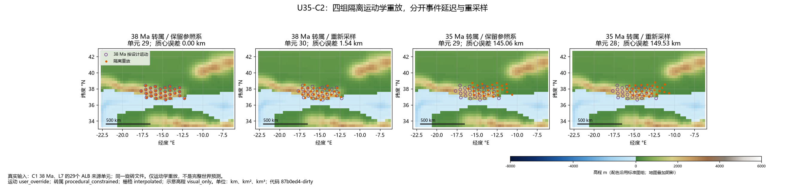
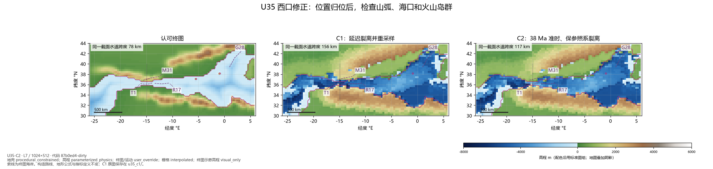
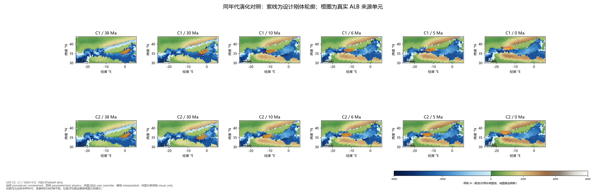
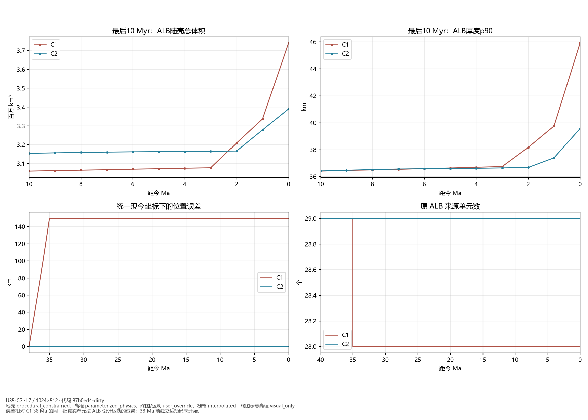
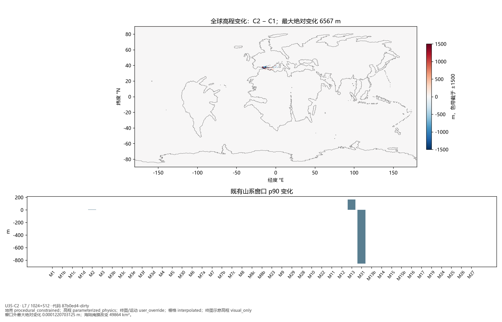
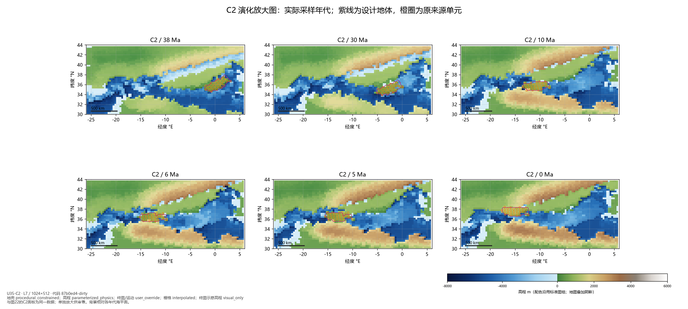

U35-C2：西口裂离修正
保留终图和运动，修正 ALB 分离时序并消除转属重采样。结果待用户看图，非阶段验收。
C1诊断 · 最新标准图组
20_west_arc_c2_rift_spike.png

21_west_arc_c2_comparison.png

22_west_arc_c2_evolution.png

23_west_arc_c2_history.png

24_west_arc_c2_global_change.png

25_west_arc_c2_evolution_detail.png
